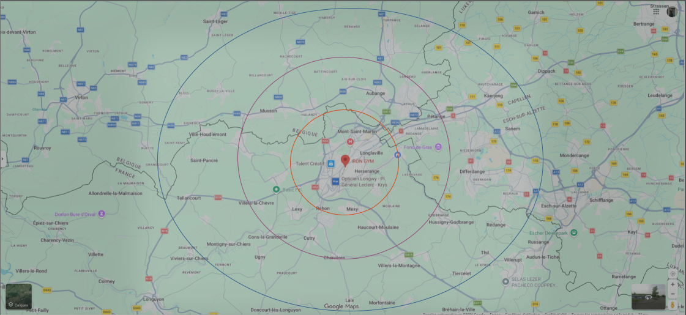

Présentation de mon expérience professionnelle
Mon stage — Iron Gym
Présentation de l'entreprise
Iron Gym est une société commerciale spécialisée dans la vente de compléments alimentaires, de nutrition sportive et de prestations liées au sport et au bien-être.
L’entreprise exerce dans le secteur tertiaire et propose également des coachings personnalisés et différents produits de nutrition sportive adaptés à tous les profils.
Situation géographique
L’entreprise se situe dans le secteur de Longwy, une position stratégique à proximité immédiate des frontières du Luxembourg et de la Belgique.
Atouts : coût de la vie abordable, ville frontalière dynamique et proximité immédiate avec plusieurs pays européens.
Faiblesses : marché de l'emploi local parfois restreint, loisirs urbains limités, climat hivernal rigoureux et certaines zones en restructuration économique.

Étude de la clientèle
La clientèle du point de vente est mixte, composée d’hommes et de femmes dynamiques âgés de 15 à 65 ans.
Les clients proviennent majoritairement du grand secteur de Longwy et se déplacent pour acquérir des compléments alimentaires ciblés, des boissons énergisantes et des produits spécialisés de nutrition sportive.
Le magasin accueille un flux quotidien régulier situé entre 50 et 100 clients par jour, pour un panier moyen évalué à environ 130 €.
Politique commerciale
Iron Gym s'entoure de leaders du marché et commercialise de nombreuses marques de renommée internationale telles que :
Les approvisionnements de stocks sont gérés avec agilité, principalement par des commandes numériques avec un réapprovisionnement mensuel global ou immédiat selon les fluctuations des ventes.
L’entreprise applique une stratégie d’alignement face à la concurrence et communique activement via des campagnes sur les réseaux sociaux, des affichages physiques en magasin, du contenu vidéo moderne et des offres promotionnelles éphémères.
Digitalisation
Iron Gym intègre de nombreux outils numériques innovants au service de sa gestion et de sa communication de marque :
- Canva pour le graphisme et la création d'identités visuelles percutantes
- Réseaux sociaux pour animer, fidéliser et fédérer la communauté sportive
- Logiciels métiers dédiés aux plannings et au pilotage administratif
- Écrans connectés et affichages interactifs directement au sein de la boutique
Omnicanalité
Afin d'offrir une expérience utilisateur complète, l’entreprise croise plusieurs canaux de contact :
- Vente directe et accompagnement humain au sein du magasin physique
- Social selling et service client réactif sur les plateformes numériques
- Synergie globale préservant un lien fort et continu, qu’il soit physique ou digital
Ce que j'ai appris
- Comprendre en profondeur les mécaniques et la gestion d’une entreprise commerciale dédiée à l'univers du sport et de la nutrition.
- Affiner mes compétences de conseil, d'écoute active et optimiser ma relation de confiance avec le client.
- Accroître mon niveau d'autonomie quotidienne, structurer mon organisation et intégrer les codes de la rigueur professionnelle.